In this homework I built a real-time cloth simulator and a set of GLSL shaders to render it. The cloth is a mass-spring system: a grid of point masses connected by structural, shearing, and bending springs, each resisting a different kind of deformation (Part 1). Every time step, the simulator adds up gravity and Hooke's-law spring forces, advances each mass with damped Verlet integration, and then applies Provot's constraint so that no spring stretches more than 10% (Part 2). On top of that, the cloth reacts to its surroundings. It collides with spheres and planes by correcting positions, with friction (Part 3). It also avoids passing through itself, using a spatial hash so that each mass only checks nearby masses instead of all of them (Part 4). Finally, I wrote vertex and fragment shaders for diffuse and Blinn-Phong lighting, texture mapping, bump and displacement mapping, and an environment-mapped mirror (Part 5).
A few things I found especially interesting:
The cloth is modeled as a grid of point masses connected by springs. Cloth::buildGrid builds this
grid from the scene parameters: the cloth's width and height, the number of masses along
each side (num_width_points × num_height_points), its orientation, and a list of
pinned grid positions.
The masses are spaced evenly so that the first mass sits at \((0, 0)\) and the last one at \((\text{width}, \text{height})\) in the plane of the cloth. With \(W\) and \(H\) masses per side, the spacing is \[ \Delta x = \frac{\text{width}}{W - 1}, \qquad \Delta y = \frac{\text{height}}{H - 1}, \] and the mass at grid index \((x, y)\) is placed at:
All masses are stored in a single vector<PointMass> in row-major order, so the mass at
\((x, y)\) is at index \(yW + x\). The mesh-building code that turns the masses into triangles relies on this
ordering. To decide which masses are pinned, I first convert every pinned \((x, y)\) pair from the scene file into
its 1D index and store them in a hash set. Each mass then needs only one constant-time lookup, instead of a scan
over the whole pinned list.
After every mass exists, a second pass over the grid creates the springs. Each spring stores pointers to its two masses, its type, and a rest length equal to the distance between the masses when the spring is created. There are three kinds of springs, each resisting a different kind of deformation:
Because each mass only connects to neighbors that come before it (to its left or above), every pair of masses gets exactly one spring and no spring is created twice. Masses on the edges simply skip the neighbors that do not exist. For a \(W \times H\) grid this gives
\[ \underbrace{W(H-1) + H(W-1)}_{\text{structural}} \;+\; \underbrace{2(W-1)(H-1)}_{\text{shearing}} \;+\; \underbrace{W(H-2) + H(W-2)}_{\text{bending}} \]
springs. For the \(50 \times 50\) cloth in pinned2.json, that is 4900 structural, 4802 shearing, and
4800 bending springs. I checked my grid against these counts, as well as the mass positions, pinned flags, and
rest lengths.
Wireframe renderings of scene/pinned2.json, with different sets of constraints turned on:
|
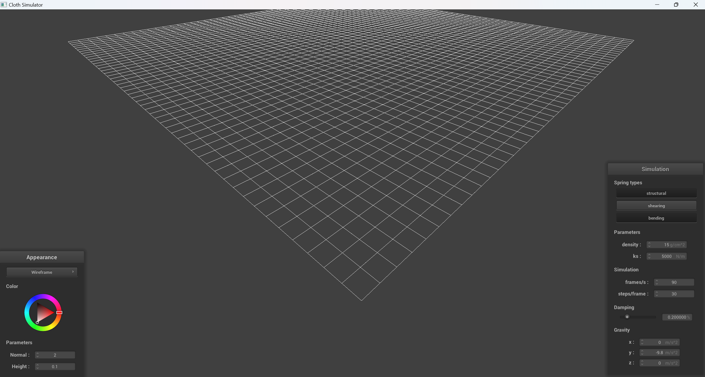 |
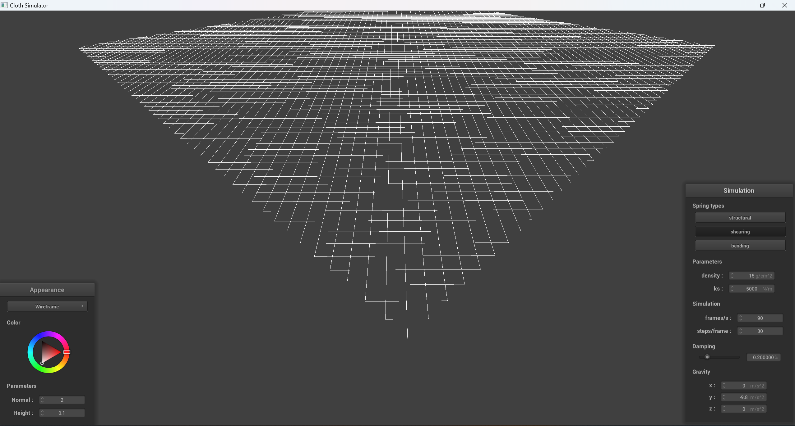 |
|
|
|
All three images use the same camera, looking at the cloth from one of its corners, which is the bottom tip of each image. From this angle, the cloth's own grid lines run diagonally across the screen.
Cloth::simulate advances the cloth by one time step \(\Delta t\). The simulator calls it
steps/frame times per frame, so with the default 90 frames/s and 30 steps/frame,
\(\Delta t = 1/2700\) s. Each step has three stages: compute the force on every point mass, move every mass
with Verlet integration, and then limit how far any spring can stretch.
Each point mass has mass \(m = \text{width} \cdot \text{height} \cdot \text{density} / (W H)\). At the start of every step, each mass's force is reset to the external force \(F = m \sum_i a_i\), where the \(a_i\) are the external accelerations (here just gravity). Then every spring whose constraint type is enabled in the GUI adds a spring force following Hooke's law: \[ F_s = k_s \left( \| p_b - p_a \| - l \right), \] where \(l\) is the spring's rest length. The force acts along the line between the two masses. When the spring is stretched, it pulls \(a\) toward \(b\) with force \(F_s\), and pulls \(b\) toward \(a\) with the equal and opposite force. Bending springs use \(0.2\,k_s\) instead of \(k_s\). Real cloth bends much more easily than it stretches, so weaker bending springs let the cloth fold while still resisting sharp creases.
Instead of storing velocity, each mass remembers its position from the previous step, and the velocity is
implied by the difference between the two positions. With damping, the new position of each unpinned mass is
\[ x_{t+\Delta t} = x_t + (1 - d)\,(x_t - x_{t-\Delta t}) + a_t\,\Delta t^2, \qquad a_t = F / m, \]
where \(d\) is the GUI damping value divided by 100, since the GUI gives it in percent. The term
\(1 - d\) removes a small fraction of the velocity every step. This stands in for energy loss from friction and
air resistance, which the model does not simulate otherwise. After the update, the old \(x_t\) becomes the new
last_position. Pinned masses are skipped entirely, so they stay fixed.
With only springs and gravity, the cloth can stretch unrealistically far in a single step, especially where it carries the most weight, near the pinned corners. After integration, I go through every enabled spring once. If its length is more than \(1.1\,l\), I pull its two masses toward each other, along the spring's direction, until it is exactly \(1.1\,l\) long. If both masses are free, each moves half of the correction. If one is pinned, the free mass takes the whole correction. If both are pinned, the spring is left alone, since neither mass can move and the distance between them never changes from its starting value.
Because this is a single pass, fixing one spring can stretch a neighbor that was already fixed earlier in the
pass. In a test run of pinned2.json that I simulated for 10 seconds, about 3.8% of the springs
ended slightly above the limit, at most about 1.126 times their rest length. These springs were all near the
heavily loaded top edge and pinned corners. More passes per step would reduce this, but one pass already keeps
the cloth from stretching unrealistically.
All experiments use scene/pinned2.json (two corners pinned), seen from the same camera angle. I
changed one parameter at a time and kept all others at their defaults. Values are as shown in the GUI: density
15 g/cm², \(k_s\) = 5000 N/m, damping 0.2%.
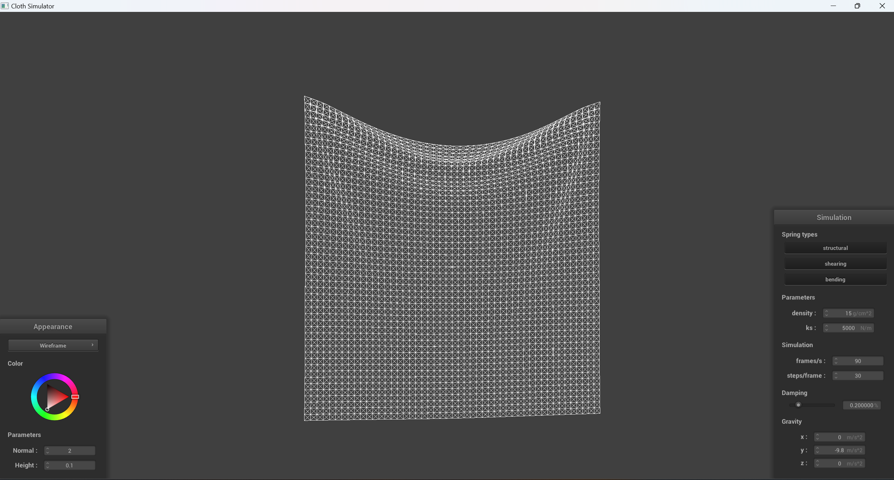
|
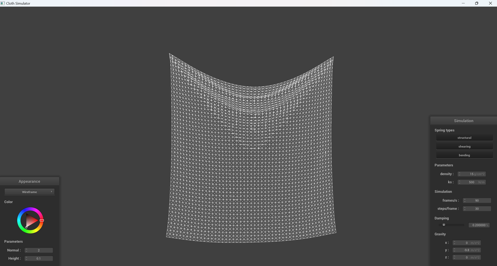 |
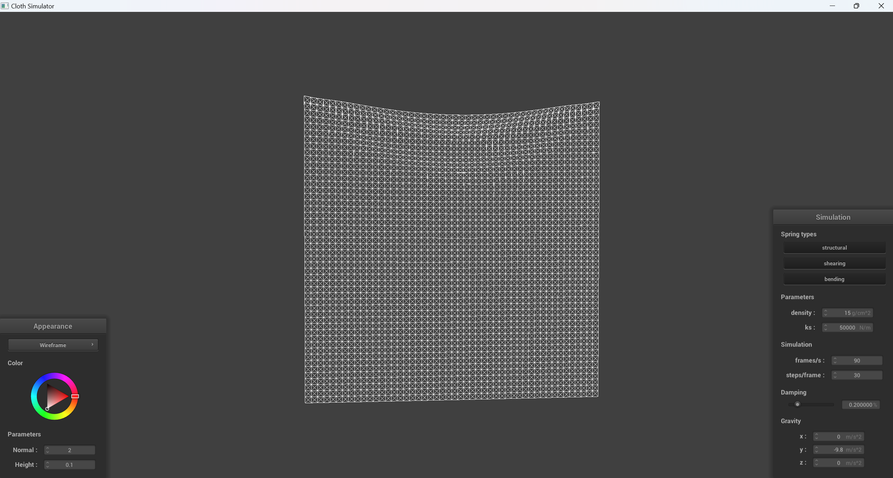 |
From start to rest. In every case the cloth starts flat and horizontal, swings down around its two pinned corners like a pendulum, and comes to rest hanging vertically. To compare the motion precisely, I also ran the same scene without the GUI and tracked the middle of the cloth's free (bottom) edge (results in the table below). With a low \(k_s\), the springs give way easily, so the cloth stretches like rubber as it swings down. The bottom edge reaches its lowest point sooner (about 1.5 s, versus about 2.4 s at the default) and ends up 6 cm lower than with the default. With a high \(k_s\), the cloth swings down almost as a rigid sheet, barely stretching, and creeps into its final position. With the default damping, none of the runs bounced noticeably (no vertical rebound larger than 5 mm). All of them settled to within 1 cm of their final position after about 2 seconds, so the spring constant mainly changes how much the cloth stretches, not how long it moves.
At rest. With a low \(k_s\), the springs are soft, so gravity stretches them more. Compared with the default, the top edge between the two pinned corners sags much deeper. The cloth also gets longer: its bottom edge bows downward instead of staying straight, and its sides curve inward. The grid near the pinned corners is visibly stretched and skewed. With a high \(k_s\), the cloth is stiff. The top edge is pulled almost straight, the cloth stays close to its original square shape, and its bottom edge sits higher than in the default case. Small wrinkles appear near the pinned corners, where the taut cloth is pulled in two directions at once.
|
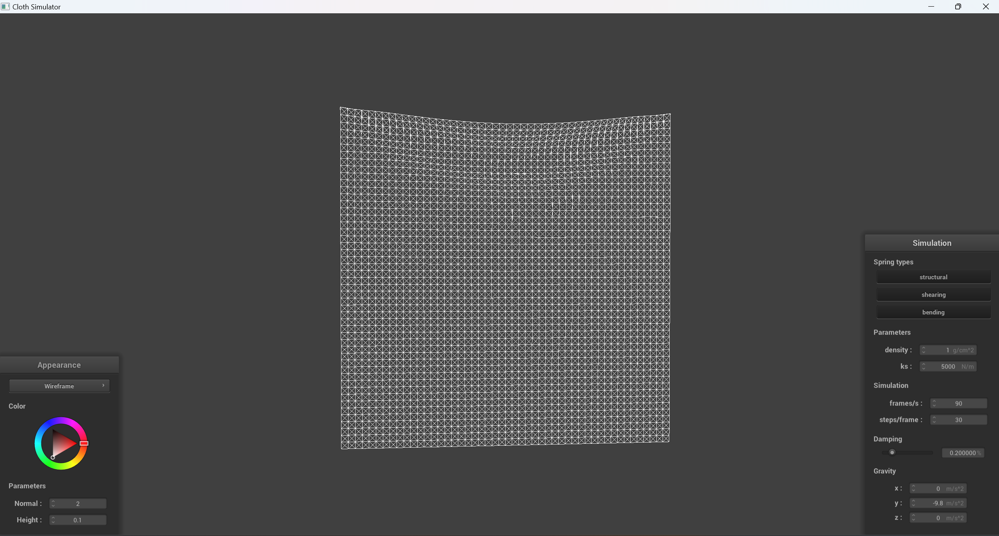 |
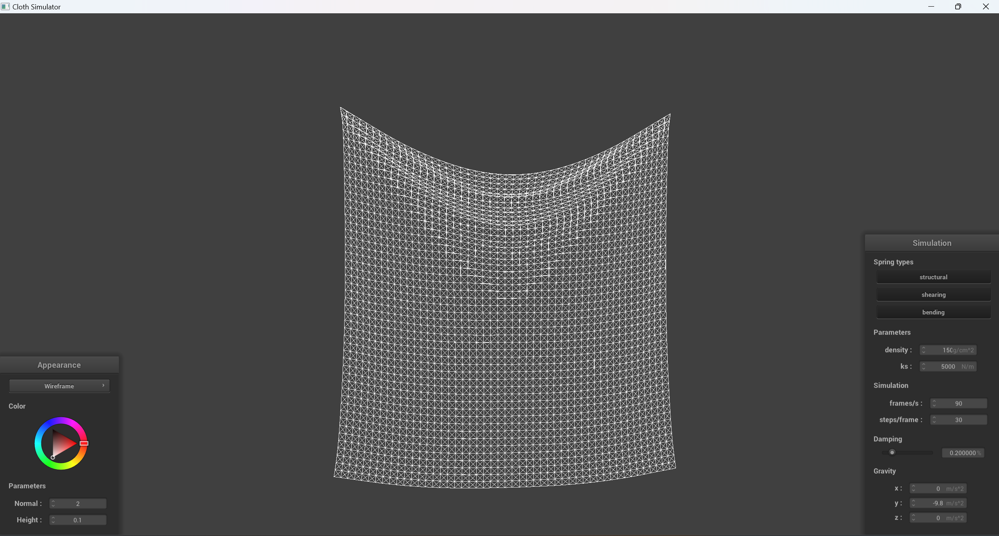 |
Density has the opposite effect of \(k_s\). A low density makes the cloth light. It barely stretches, and the resting shape looks almost the same as the high-\(k_s\) case. A high density makes the cloth heavy, and its resting shape is nearly identical to the low-\(k_s\) case. This makes sense: at rest, how far each spring stretches depends on the weight it holds relative to its stiffness, roughly \(m g / k_s\), and \(m\) is proportional to density. Multiplying the density by 10 (15 → 150) therefore looks just like dividing \(k_s\) by 10 (5000 → 500). Dividing the density by 15 (15 → 1) looks like multiplying \(k_s\) by 10 (5000 → 50000), with the top edge even slightly flatter.
The same holds for the motion from start to rest. A heavy cloth (density 150) stretches as it swings down and reaches its lowest point at about 1.5 s, exactly like the \(k_s\) = 500 run. A light cloth (density 1) swings down almost without stretching, like the \(k_s\) = 50000 run. The reason is that in this simulation, gravity gives every mass the same acceleration no matter its mass, while the spring forces are divided by the mass. So the motion depends only on the ratio \(k_s / \text{density}\). Density 150 with \(k_s\) = 5000 is mathematically the same simulation as density 15 with \(k_s\) = 500, and the measurements in the table below agree to every digit shown.
Run (pinned2.json) |
Final height of bottom edge (m) | Time to lowest point | Settled within 1 cm after |
|---|---|---|---|
| default (\(k_s\) 5000, density 15) | −0.083 | 2.38 s | 2.1 s |
| \(k_s\) = 500 | −0.143 | 1.46 s | 2.1 s |
| \(k_s\) = 50000 | −0.022 | 2.46 s | 2.0 s |
| density = 150 | −0.143 | 1.46 s | 2.1 s |
| density = 1 | −0.016 | 2.36 s | 2.0 s |
Measured in a headless run of the same simulation code: the cloth starts at height 1 m, and the table shows the middle of its free edge. The "lowest point" is reached either while still sinking or at the end of the swing. Time to lowest point is later than the settle time when the cloth creeps down its last millimeter.
|
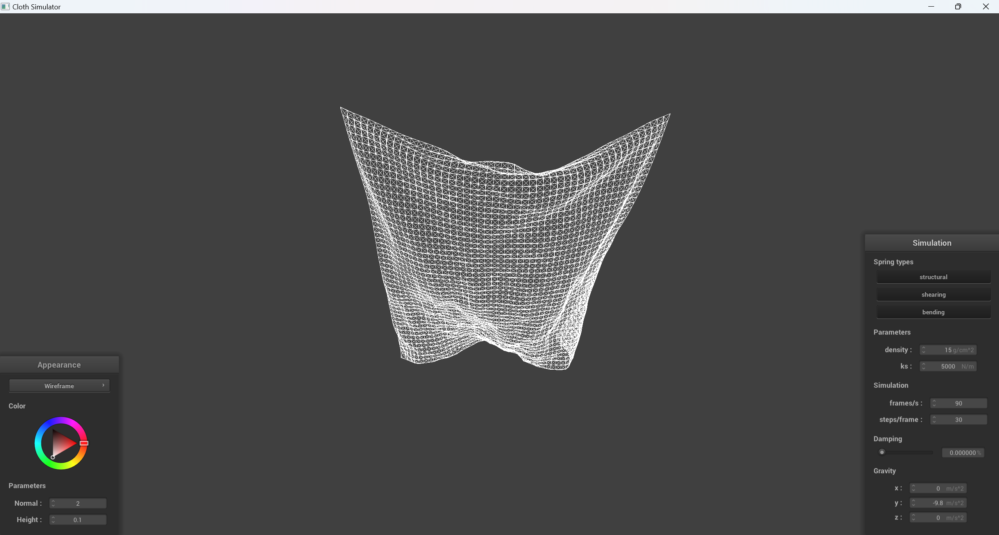 |
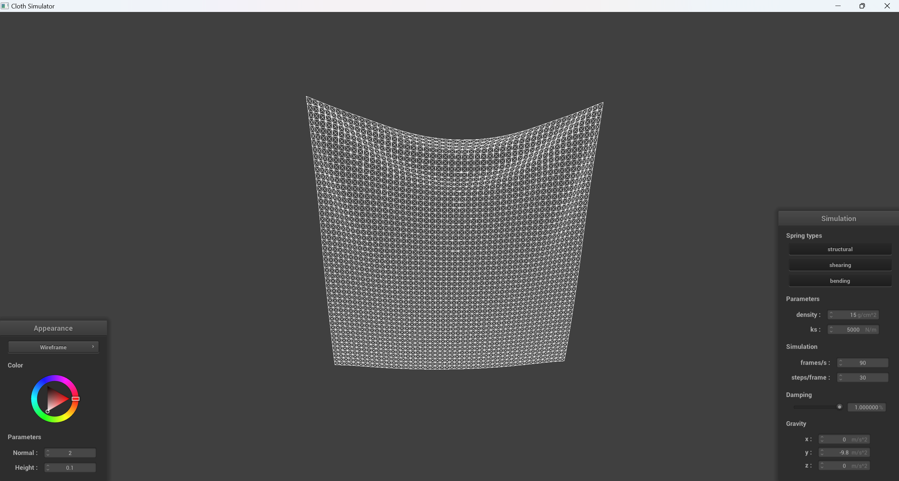 |
Damping changes how the cloth moves, not where it ends up, so these two screenshots were taken while the cloth was still moving, about 2 seconds after starting the simulation. With no damping, the velocity term is never reduced. The cloth swings hard as it falls, its lower half whips forward and back, and it crumples into many folds. It keeps swinging for a very long time: after 5 minutes it was still visibly moving. The main thing taking energy out is the length constraint, which removes a little motion each time it pulls an over-stretched spring back. With high damping (1%), each step keeps only 99% of the velocity, and there are 2700 steps per second. The cloth sinks slowly and smoothly, as if falling through syrup. At 2 seconds it is still descending, with no folds at all, and it came to rest after about 10 seconds without swinging back and forth.
pinned4.json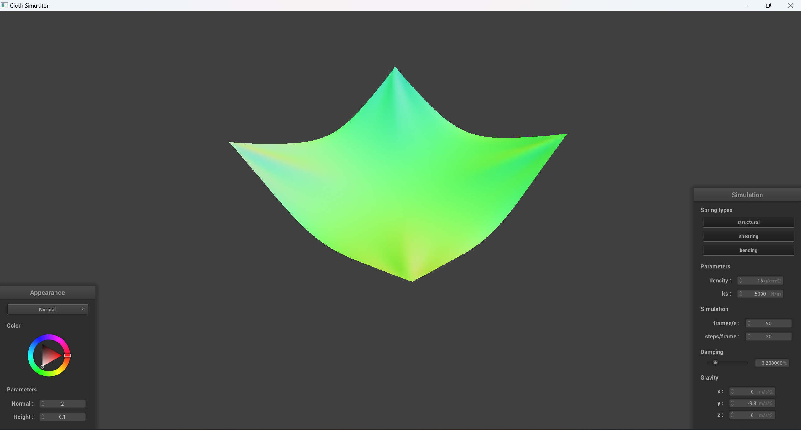
scene/pinned4.json at rest, with all four corners pinned, rendered with the normal
shader. All parameters are the defaults: density 15 g/cm², \(k_s\) = 5000 N/m, damping 0.2%.
Collisions are handled by correcting positions after each Verlet step, not by applying forces. In
Cloth::simulate, right after integration, every unpinned point mass is passed to the
collide method of every collision object in the scene. If the mass has ended up inside or on the
wrong side of the object, collide moves it back to the surface. Both object types use the same
idea. They find a point on the surface where the mass should be (the tangent point), compute the
correction from the mass's previous position last_position to that point, and set
\[ x_{\text{new}} = x_{\text{last}} + (1 - f)\,(x_{\text{target}} - x_{\text{last}}), \]
where \(f\) is the object's friction coefficient. Starting from the previous position, rather than the
penetrating one, means the mass moves at most as far as it legitimately could. Scaling the move by \(1 - f\)
makes the mass lose a fraction \(f\) of its motion every time it touches the surface, which acts like friction
and makes the cloth grip the object instead of sliding off.
A mass collides with a sphere of center \(c\) and radius \(R\) when \(\| x - c \| \le R\). I compare squared lengths here, so no square root is needed for the many masses that are not touching the sphere. The tangent point is where the ray from the center through the mass leaves the sphere: \[ x_{\text{target}} = c + R\,\frac{x - c}{\| x - c \|}. \] This pushes the mass straight outward along the sphere's normal at that point. A mass exactly at the center has no outward direction, so it is skipped; this cannot happen in practice.
For a plane through point \(p\) with unit normal \(n\), I compute the mass's signed distance to the plane
before and after the step: \(d_{\text{last}} = (x_{\text{last}} - p)\cdot n\) and
\(d = (x - p)\cdot n\). A collision means the mass started on one side and ended on or past the plane: the
signs of the two distances differ. The tangent point is where the mass would meet the plane moving straight
toward it, \(x - d\,n\). Moving the mass exactly onto the plane could leave it numerically on the wrong side,
so the target is offset slightly, by \(\epsilon\) = SURFACE_OFFSET = 0.0001, back toward the side
the mass came from:
\[ x_{\text{target}} = x - d\,n + s\,\epsilon\,n, \qquad s = \mathrm{sign}(d_{\text{last}}). \]
One edge case came up while testing. A vertical cloth that starts standing on the floor (as in
selfCollision.json) has its bottom row at a distance of exactly zero from the plane, so it
does not start strictly on either side. If that case is ignored, those masses fall straight through the floor.
I treat a mass that starts exactly on the plane as being on the side the normal points to, so it is kept above
the floor.
Testing with the sphere scene showed that a mass can end a step up to about 0.0001 inside the sphere (0.05% of its radius). Two things cause this. Moving only a fraction \(1 - f\) of the way from the previous position to the tangent point can stop short of the surface. Also, the spring-length constraint runs after the collision step and can pull a mass slightly back in. The penetration is far too small to see.
scene/sphere.json at rest with three spring constants. All other parameters are the defaults, and
all three use the same camera and the normal shader.
|
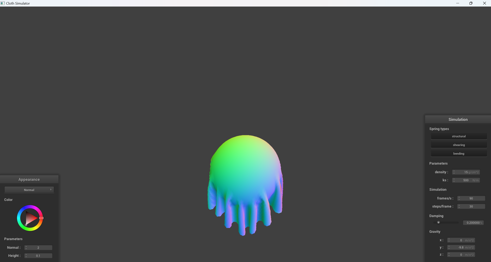 |
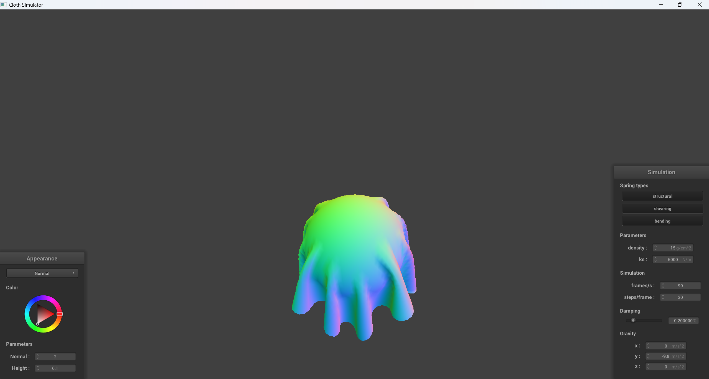 |
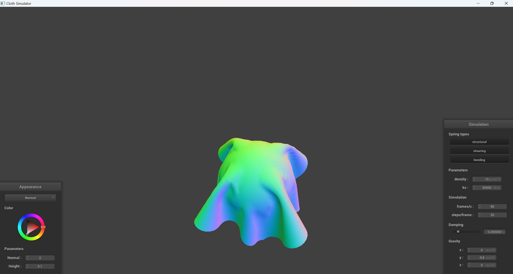 |
A lower \(k_s\) makes the springs easier to stretch and the bending springs easier to bend, so gravity can pull the cloth closely around the sphere and fold it into many small folds. A higher \(k_s\) resists both stretching and bending, so the cloth keeps more of its original flat shape. It can only bend in a few places, which gives fewer, larger folds.
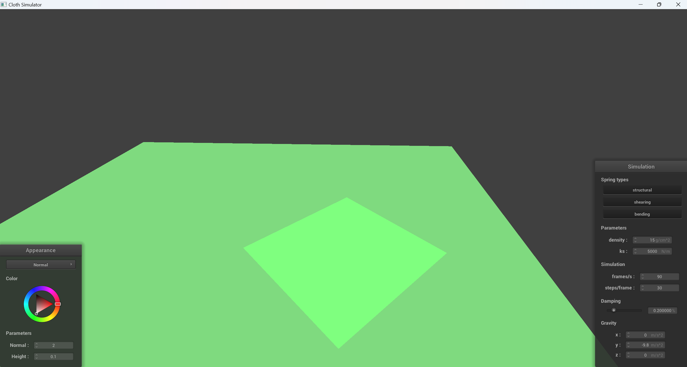
scene/plane.json at rest: the cloth lies flat on the plane (default parameters, normal
shader). Because the cloth and the plane both face straight up, the normal shader gives them nearly the same
color; the slightly lighter square is the cloth.Without self-collision, nothing stops one part of the cloth from passing through another, so a cloth that falls onto itself collapses into a single flat sheet. To prevent this, every point mass should stay at least \(2 \cdot \text{thickness}\) away from every other point mass. Checking every pair directly costs \(O(n^2)\) per time step: for a \(50 \times 50\) cloth that is over 3 million pairs, thousands of times per simulated second. Instead, I use spatial hashing so that each mass only checks the few masses near it.
Space is divided into a 3D grid of boxes of size \(w \times h \times t\), where
\[ w = \frac{3 \cdot \text{width}}{W}, \qquad h = \frac{3 \cdot \text{height}}{H}, \qquad t = \max(w, h). \]
The factor of 3 (the spec's empirically chosen constant) makes each box about three grid spacings wide.
hash_position maps a position to the box that contains it: it computes the integer box coordinates
\((\lfloor x/w \rfloor, \lfloor y/h \rfloor, \lfloor z/t \rfloor)\) and combines them into one number. The hash
table uses float keys, which can represent every integer below \(2^{24}\) exactly. So I wrap each
box coordinate into the range \([0, 256)\) and combine them as \(b_x + 256\,(b_y + 256\,b_z)\), which always
stays below \(2^{24}\). This gives every box within a 256-box range per axis (about 15 m for the default cloth)
its own key. Boxes farther apart than that could share a key, but that would only add a few extra candidates,
which the distance check below rejects. I verified that all \(128^3\) boxes in a block of space get distinct
keys.
At every time step, build_spatial_map clears the table and inserts a pointer to every point mass
under its box's key. The table maps each key to a list of the masses in that box. Positions change every step,
so the table has to be rebuilt every step.
For each unpinned point mass \(p\), self_collide looks up the masses in the same box. For every
candidate \(q \ne p\) closer than \(2 \cdot \text{thickness}\), it computes the correction that would push
\(p\) directly away from \(q\) until they are exactly \(2 \cdot \text{thickness}\) apart:
\[ \Delta_q = \left(2 \cdot \text{thickness} - \| p - q \|\right) \frac{p - q}{\| p - q \|}. \]
Only \(p\) moves; \(q\) gets its own correction when it is processed. The final correction is the average of
all \(\Delta_q\), divided by simulation_steps. Averaging keeps \(p\) from being pushed too far
when several neighbors are too close at once. Dividing by the number of steps per frame spreads the
correction over many small steps, which avoids sudden jumps and jitter. In simulate, self-collision
runs right after Verlet integration and before collisions with other objects.
I tested this on selfCollision.json by simulating 10 seconds with and without self-collision
(thickness set to 0 to turn it off). I then counted pairs of masses that are not direct grid neighbors but are
closer than \(2 \cdot \text{thickness}\) = 0.019:
| Self-collision on | Self-collision off | |
|---|---|---|
| Pairs closer than 0.019 | 539 | 7862 |
| Closest pair distance | 0.0113 | 0.00013 |
Self-collision removes over 90% of the overlapping pairs. Some pairs remain for two reasons. First, the
correction is spread over several steps (it is divided by simulation_steps), so a pair can stay
slightly too close for a while. Second, only the mass's own box is checked: two masses on opposite sides of a box
boundary are never compared, however close they are. Checking the 26 neighboring boxes as well would catch
these, at a higher cost.
scene/selfCollision.json with default parameters, rendered with the normal shader. The colors show
the surface normal: parts of the cloth that folded over and are showing their back side appear purple.
|
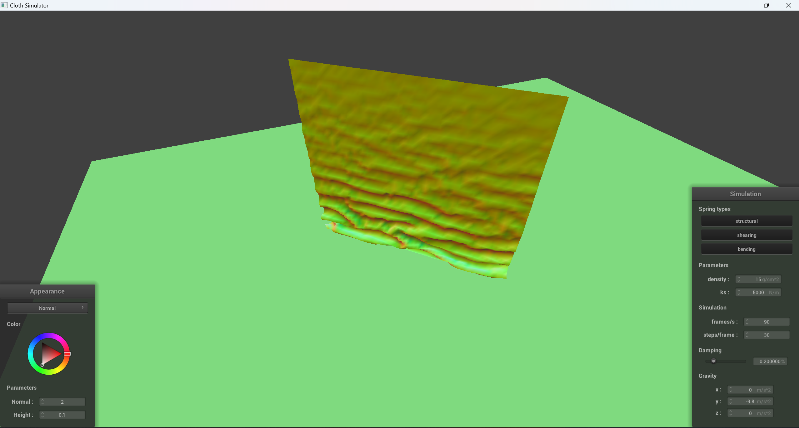 |
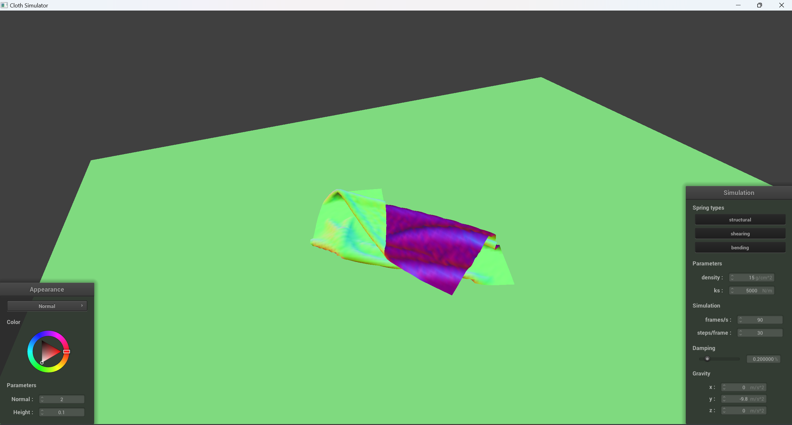 |
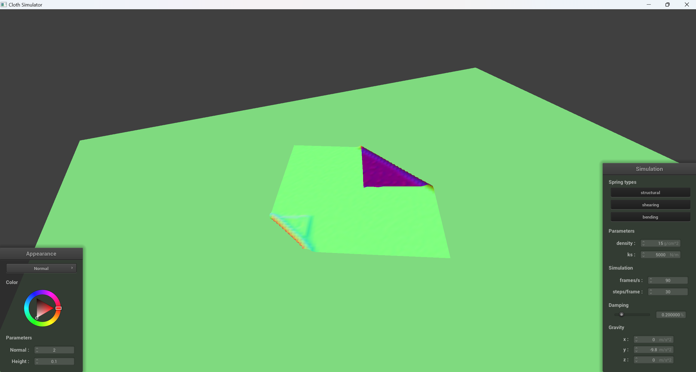 |
All four images use the same camera and were taken while the cloth was folding, at about the same moment as image 2 above. Only the listed parameter differs from the defaults (density 15 g/cm², \(k_s\) = 5000 N/m).
|
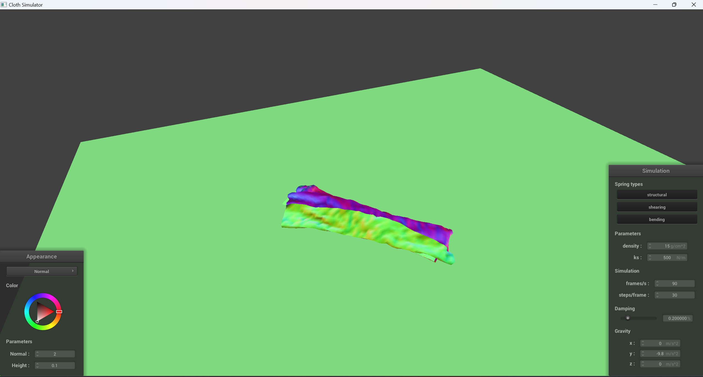 |
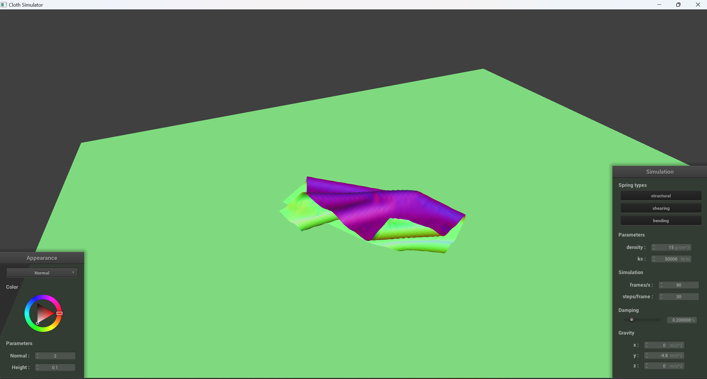 |
|
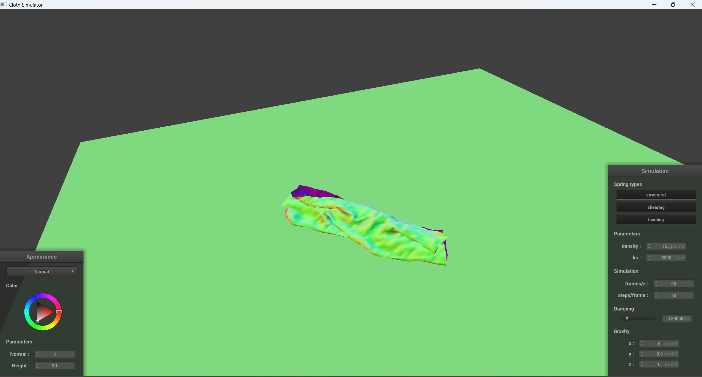 |
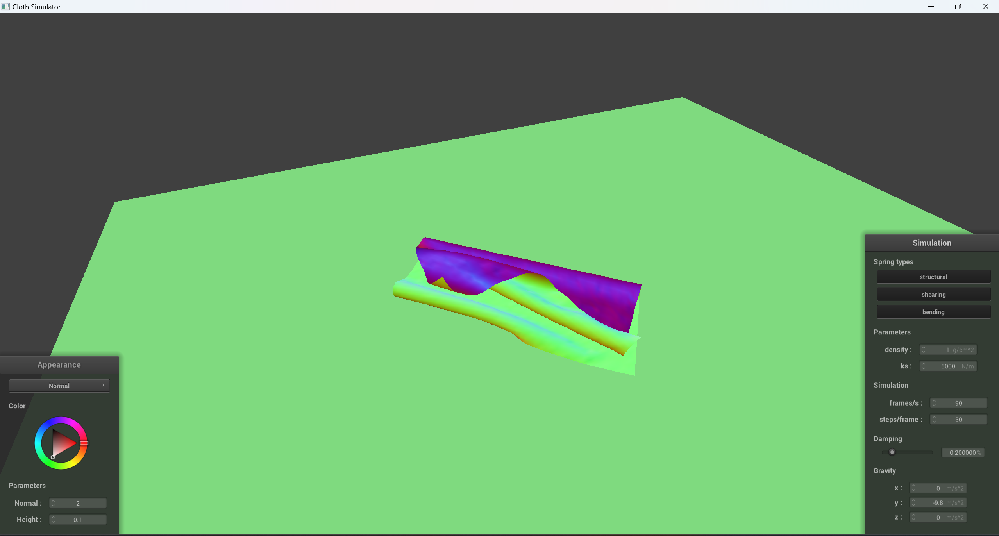 |
Low \(k_s\) / high density (left column). The cloth crumples into a narrow, compact strip of many tightly stacked layers. Its whole surface is covered in small, irregular wrinkles, like crumpled paper. Soft springs let the cloth compress and bend over very short distances, so it can form many small folds and pack them tightly.
High \(k_s\) / low density (right column). The cloth folds in a few large, smooth, rounded folds, like a thick canvas. It covers a wider area, and the layers leave visible gaps where the upper layer arches over the lower one. Stiff springs resist both stretching and bending, so the cloth can only bend in a few places, over long distances.
The two columns line up because, in this simulation, the motion depends only on the ratio of \(k_s\) to density. A mass's acceleration is \[ a = g + \frac{F_{\text{springs}}}{m}, \qquad F_{\text{springs}} \propto k_s, \quad m \propto \text{density}, \] and gravity, collisions, and the spring-length constraint do not depend on mass at all. So multiplying the density by 10 (15 → 150) is mathematically the same as dividing \(k_s\) by 10 (5000 → 500), and density 1 is the same as \(k_s\) = 75000. The density-150 and \(k_s\)-500 images show the same behavior, a narrow strip with fine wrinkles, but they are not pixel-identical. The screenshots were paused by hand at slightly different moments, and folding cloth is very sensitive to tiny differences: the two parameter sets round differently in floating point, and those differences grow over thousands of steps.
I also let each run settle. All of them spread out over time, but to different degrees. The stiffest case, density 1 (equivalent to \(k_s\) = 75000), flattened completely with no folds left. With \(k_s\) = 50000, the cloth ended almost flat with one wide, smooth curl along an edge. With \(k_s\) = 500, it ended almost flat with a tightly rolled edge full of small wrinkles. With density 150, it was still folded in two layers, with fine wrinkles along the fold. Softer cloth keeps more small-scale folding, and stiffer cloth unfolds more smoothly and completely. Some runs also ended with the whole cloth flipped upside down. Which way the cloth ends up facing depends on exactly how it tumbled, so I do not attribute that to the parameters.
A shader is a small program that runs on the GPU, in parallel, as part of the rendering pipeline. A
shader program pairs two of them. The vertex shader runs once per vertex. It transforms the
vertex's position into screen space (gl_Position), and it can pass per-vertex values such as the
world-space position, normal, tangent, and uv coordinates on to the next stage. The rasterizer then turns each
triangle into fragments (candidate pixels) and interpolates those values across the triangle. The
fragment shader runs once per fragment. It reads the interpolated values together with uniforms (values
that are the same for the whole draw call, such as the camera position, light position, and textures), and
computes that pixel's final color. Lighting and material effects therefore usually live in the fragment shader,
while anything that changes the geometry itself, like displacement, has to happen in the vertex shader.
The Blinn-Phong model approximates how light reflects off a surface as the sum of three terms: \[ L = k_a I_a \;+\; k_d \frac{I}{r^2} \max(0, \mathbf{n}\cdot\mathbf{l}) \;+\; k_s \frac{I}{r^2} \max(0, \mathbf{n}\cdot\mathbf{h})^p . \]
I used \(k_a = 0.1\), \(I_a = (1,1,1)\), \(k_s = 0.5\), and \(p = 100\). The diffuse color \(k_d\) is taken from
the GUI color wheel (white here). The images below show the cloth from sphere.json at rest, from the
same camera, with each term on its own and then all three together. To render a single term, I set the other two
terms to zero.
|
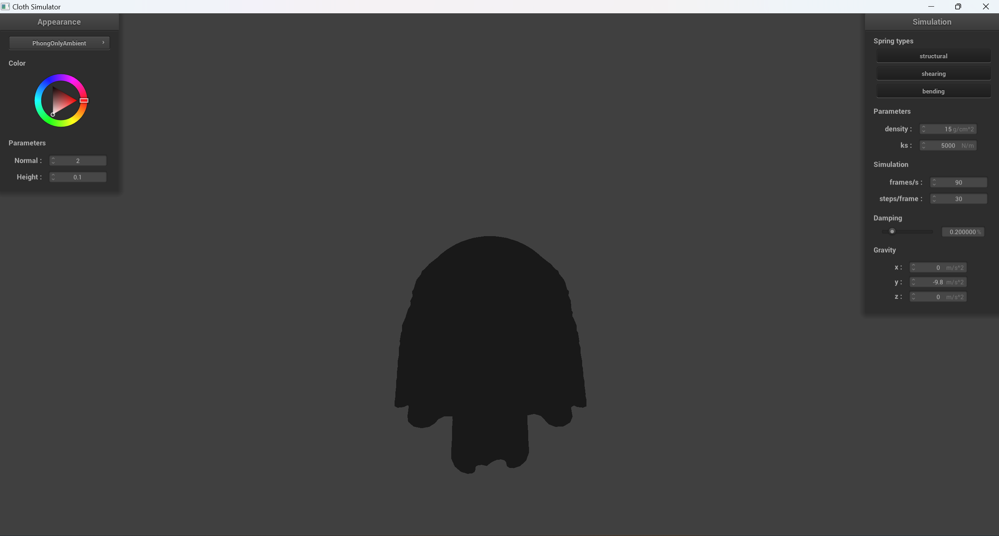 |
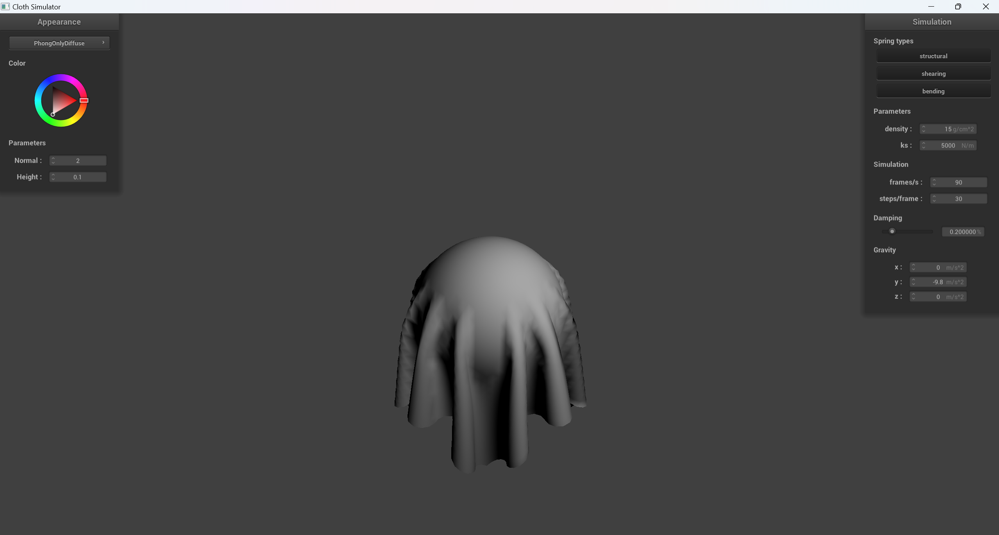 |
|
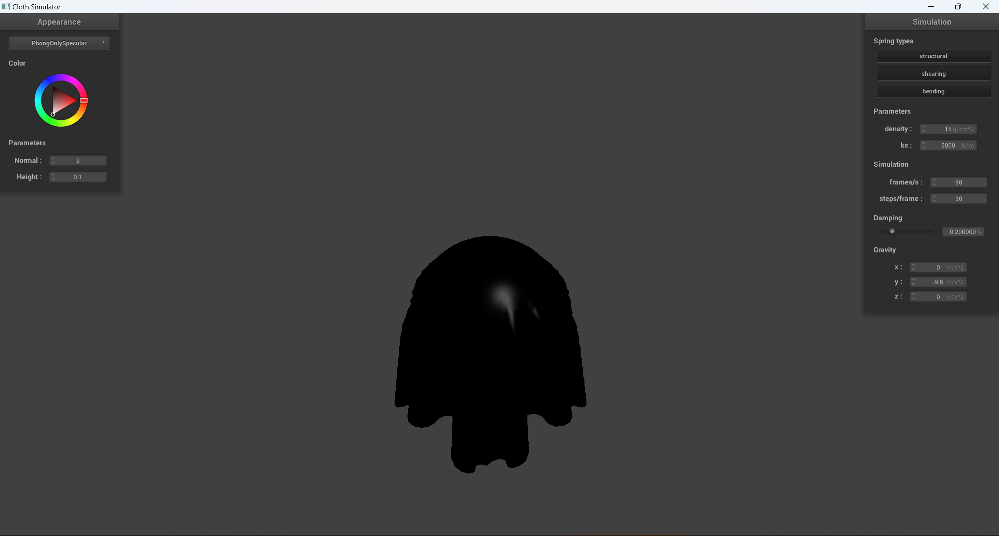 |
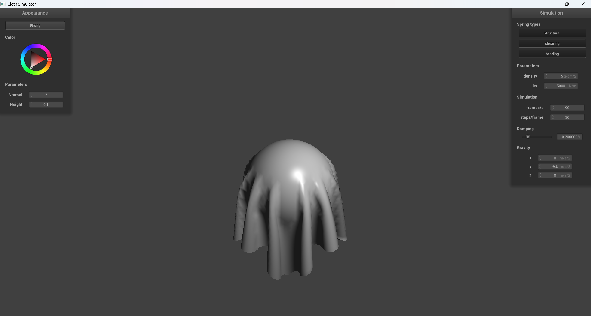 |
Each vertex of the cloth has a uv coordinate in \([0,1]^2\) that says where it falls on the texture. The vertex
shader passes the uv on, the rasterizer interpolates it, and the fragment shader looks up the color at that point
with texture(u_texture_1, v_uv). For my custom texture I used a photo of a large relief mural.
OpenGL by default expects each row of an uploaded RGB image to start on a 4-byte boundary. The original photo
was 1707 pixels wide (5121 bytes per row), which would make the texture skewed, so I resized it to 1024 ×
768 before replacing textures/texture_1.png. Because the cloth's uv square maps onto a 4:3 photo,
the image is squeezed slightly horizontally.
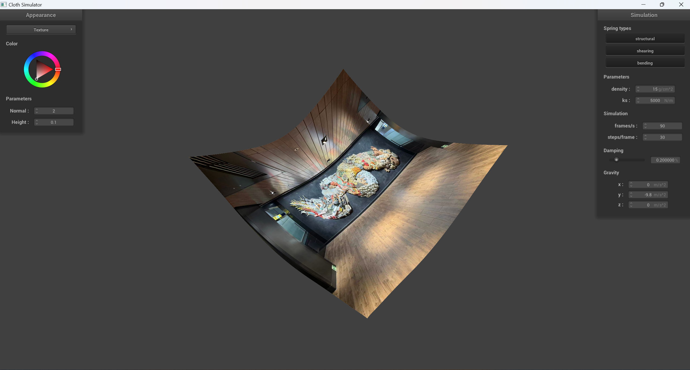
pinned4.json at rest. The image bends with the
cloth.
Bump mapping makes a surface look bumpy without changing its geometry, by perturbing the normal used for
shading. The height map \(h(u,v)\) is the red channel of u_texture_2. I estimate how fast the height
changes along \(u\) and \(v\) with finite differences of one texel:
\[ dU = \big(h(u + \frac{1}{w}, v) - h(u,v)\big)\, k_h k_n, \qquad dV = \big(h(u, v + \frac{1}{h}) - h(u,v)\big)\, k_h k_n, \]
where \(w, h\) are the texture's width and height, \(k_h\) is the height scaling, and \(k_n\) is the normal
scaling. The perturbed normal in tangent space is \(\mathbf{n}_o = (-dU, -dV, 1)\). It is converted to world
space with the TBN matrix \([\mathbf{t}\;\mathbf{b}\;\mathbf{n}]\), where \(\mathbf{b} = \mathbf{n}\times\mathbf{t}\):
\(\mathbf{n}_d = \text{TBN}\,\mathbf{n}_o\). The result is then shaded with Blinn-Phong. The cloth always supplies
the tangent \((1,0,0)\), which is not perpendicular to the normal once the cloth bends. So I first remove the part
of the tangent that lies along the normal (Gram-Schmidt) to keep the TBN frame orthonormal.
For both bump and displacement mapping I used the brick texture texture_3.png instead of the default
texture_2.png, by copying it over texture_2.png. The bump images use
\(k_n = 2\), \(k_h = 1\).
|
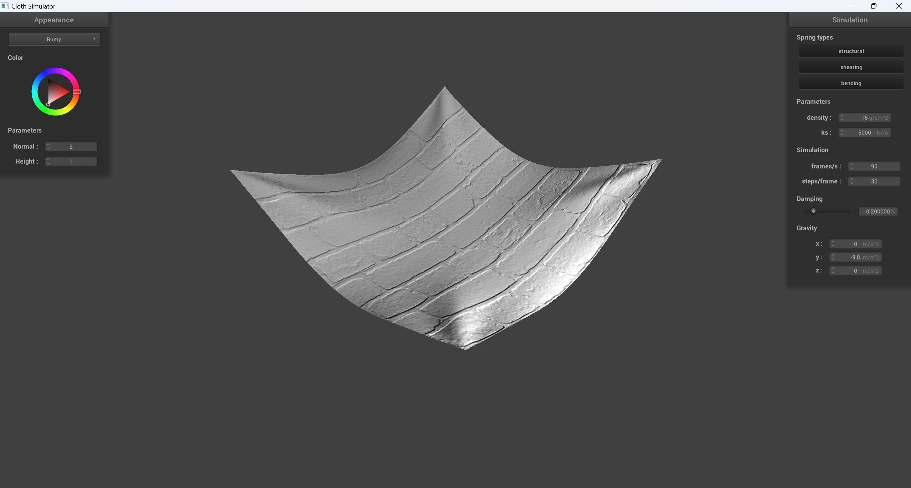 pinned4.json). |
|
The bricks and the recessed mortar lines are clearly visible, and they bend along with the cloth because the perturbation is applied in each point's own tangent frame. However, the outline of the cloth stays perfectly smooth: no vertex has moved.
Displacement mapping actually moves the geometry. In Displacement.vert, each vertex is pushed along
its original model-space normal by the height map:
\(\mathbf{p}' = \mathbf{p} + \mathbf{n}\, h(u,v)\, k_h\). The fragment shader is the same as for bump mapping, so
the shading uses the perturbed normal too. These images use \(k_n = 100\), \(k_h = 0.02\). Since
\(k_h k_n = 2\) as in the bump images, the shading detail is the same, and any difference comes from the moved
vertices.
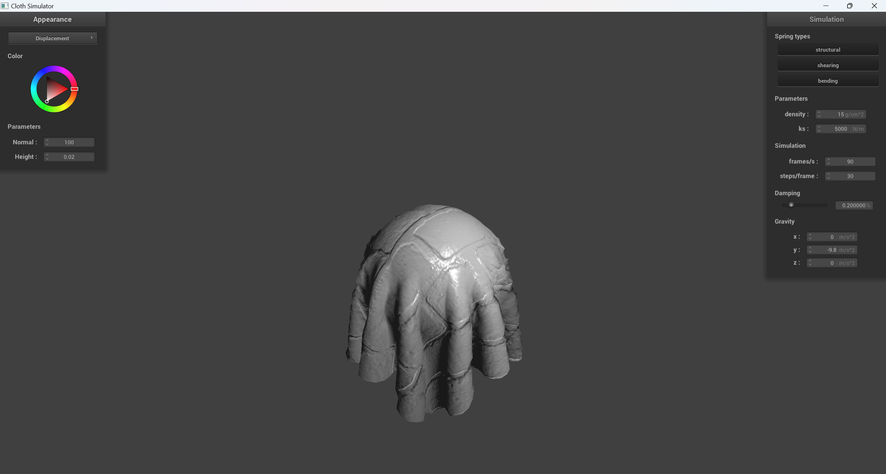
To compare the two techniques on the sphere itself, I rendered the scene before the cloth falls (so the sphere is
uncovered) with a coarse sphere mesh (-o 16 -a 16) and a fine one (-o 128 -a 128).
|
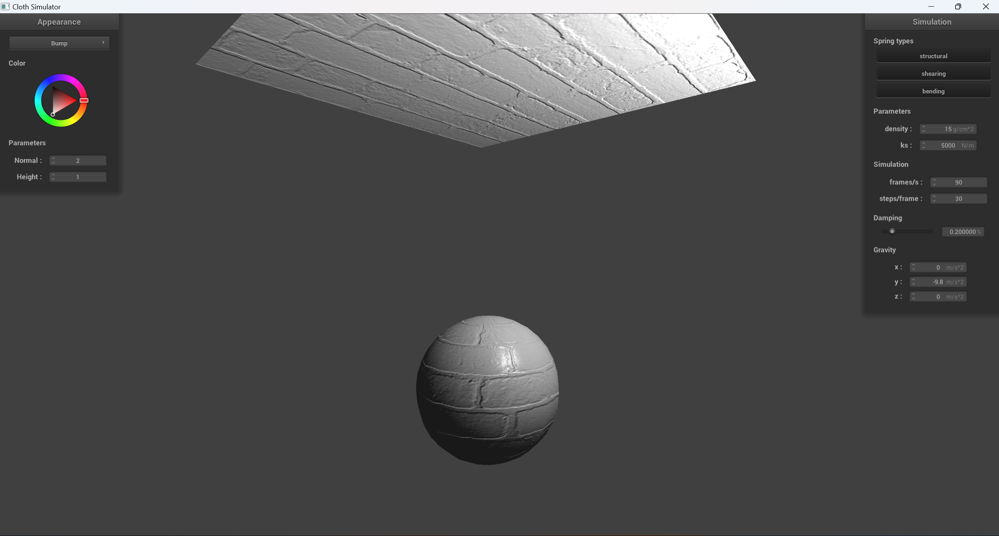 |
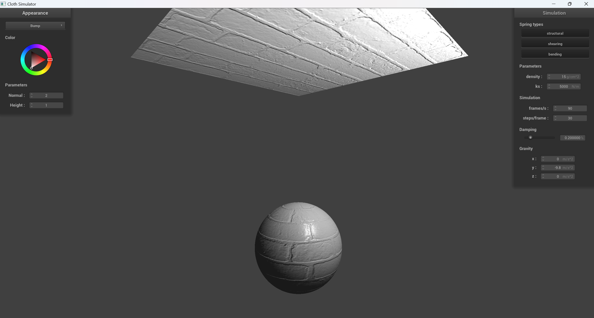 |
|
|
|
Bump mapping does not depend on the mesh resolution. The 16 × 16 and 128 × 128 spheres look nearly identical, with equally sharp bricks, because the normal is computed per pixel from the texture. Only the outline differs slightly: the coarse sphere's silhouette is a polygon with a few visible straight segments.
Displacement mapping does depend on the mesh resolution, because it can only move the vertices that exist. With the default height scale, the sphere's displacement is small: the sphere's model space is a unit sphere scaled to its radius, so a displacement of up to 0.02 there is only about 2% of the radius in the world. The effect on the sphere is subtle. On the 16 × 16 sphere it is essentially invisible, while the 128 × 128 sphere's outline becomes slightly uneven. The cloth above the sphere (50 × 50 vertices) shows the effect much better: its near edge turns jagged. To make the difference on the sphere clearer, I also rendered both resolutions up close with a larger height scale, \(k_h = 0.1\) (and \(k_n = 100\)):
|
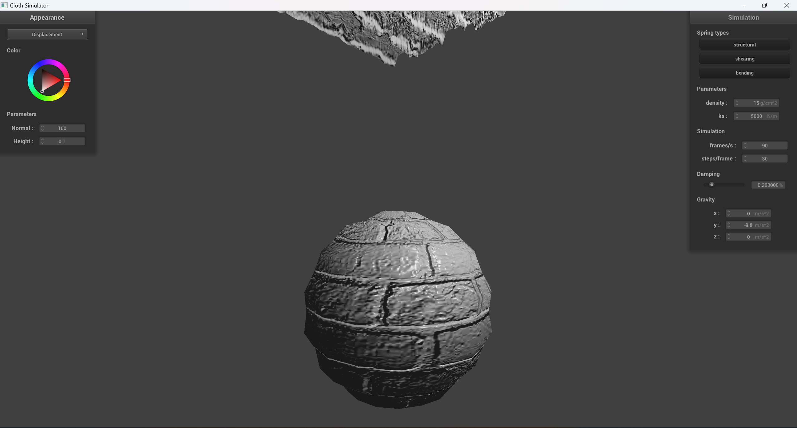 |
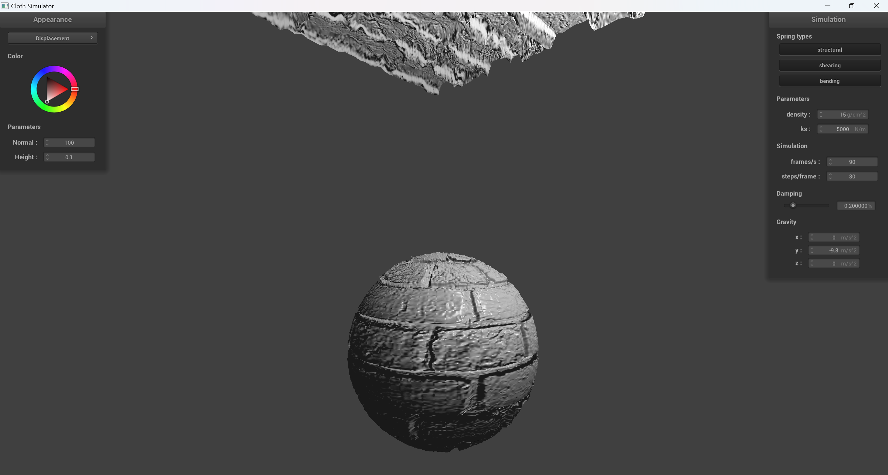 |
With the coarse mesh, the sphere becomes an irregular polyhedron. The bricks are still painted on by the fragment shader, but the silhouette is made of straight edges and does not follow them, because each face spans several bricks and the vertices cannot sample the height map's detail. With the fine mesh, the rows of bricks visibly stick out, and the silhouette is lumpy where the bricks and mortar are. (The shading in these two images is noisier because \(k_h k_n = 10\) here, five times the value used above, which exaggerates the perturbed normals.) In short: bump mapping is cheap and works on any mesh, but it is only an illusion that breaks at the silhouette. Displacement mapping changes the actual shape, but it needs a mesh dense enough to capture the texture's detail.
The mirror shader treats the surface as a perfect mirror reflecting an environment map. The direction toward the camera is \(\mathbf{w}_o = \text{normalize}(\text{camera} - \mathbf{p})\). It is reflected about the normal, \(\mathbf{w}_i = 2(\mathbf{w}_o\cdot\mathbf{n})\,\mathbf{n} - \mathbf{w}_o\), and the color is the cubemap sampled in direction \(\mathbf{w}_i\). No light sources are involved: what each point shows depends only on its normal and the viewing direction.
|
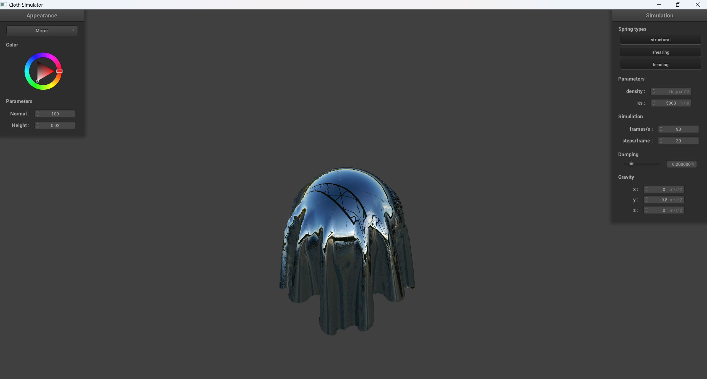 |
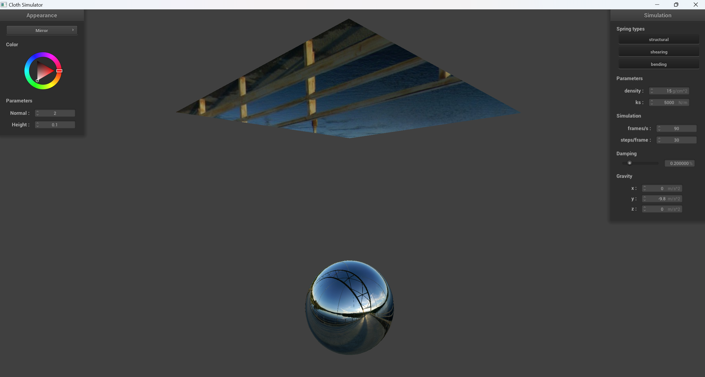 |
The flat cloth acts like an ordinary flat mirror: straight lines in the environment stay straight. The sphere's normals cover almost every direction, so it reflects nearly the whole environment, compressed toward its edges like a fisheye lens. The draped cloth is in between: each fold has its own normals, so the reflection is stretched and distorted along the folds.
I did not attempt any extra credit for this homework.
For this assignment, I used AI tools as a learning assistant to clarify theoretical concepts related to mass-spring systems, numerical integration, collision detection, spatial hashing, and shader programming. Some of the specific questions I explored included: